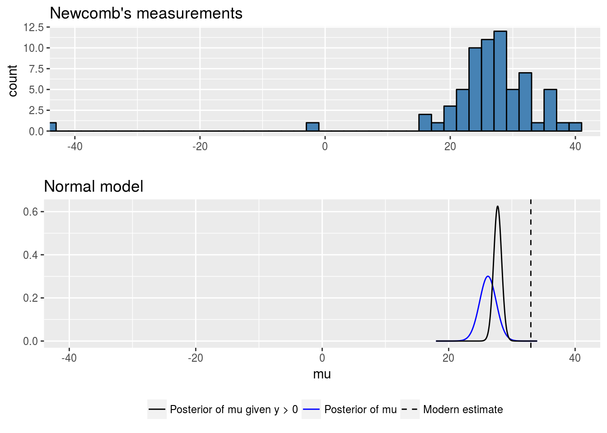

Nuisance parameters
- there are more than one unknown or unobservable parameters
- conclusions will often be drawn about one, or only a few parameters at a time
there is no interest in making inferences about many of the unknown parameters – nuisance parameters
- suppose \(\theta=(\theta_1,\theta_2)\)
- interest centers only on \(\theta_1\); \(\theta_2\) is a ‘nuisance’ parameter.
the joint posterior density: \[p(\theta_1,\theta_2|y)\propto p(y|\theta_1,\theta_2)p(\theta_1,\theta_2)\]
the marginal posterior density: \[p(\theta_1|y)=\int p(\theta_1,\theta_2|y)d\theta_2=\int p(\theta_1|\theta_2,y)p(\theta_2|y)d\theta_2\]
Normal data with a noninformative prior distribution
Likelihood function: \[p(y|\mu,\sigma^2)=\prod_{i=1}^n \frac 1{\sqrt{2\pi}\sigma}e^{-\frac{(y_i-\mu)^2}{2\sigma^2}}\]
Noninformative prior distribution: \[p(\mu,\sigma^2)\propto (\sigma^2)^{-1}\]
Posterior distribution: \[p(\mu,\sigma^2|y)\propto \sigma^{-n-2}e^{-\frac{\sum_{i=1}^n(y_i-\mu)^2}{2\sigma^2}}=\sigma^{-n-2}e^{-\frac{(n-1)s^2+n(\bar y-\mu)^2}{2\sigma^2}}\]
- \(s^2=\frac 1{n-1}\sum_{i=1}^n(y_i-\bar y)^2\) is the sample variance
Normal data with a noninformative prior distribution
Conditional posterior distribution: \[p(\mu|\sigma^2,y)\sim N(\bar y,\sigma^2/n)\]
Marginal posterior distribution \(p(\sigma^2|y)\): \[p(\sigma^2|y)\propto \int \sigma^{-n-2}e^{-\frac{(n-1)s^2+n(\bar y-\mu)^2}{2\sigma^2}} d\mu=(\sigma^2)^{-\frac{n+1}2}e^{-\frac{(n-1)s^2}{2\sigma^2}}\]
\[\sigma^2|y\sim \text{Inv-}\chi^2(n-1,s^2)\]
Normal data with a noninformative prior distribution
Marginal posterior distribution \(p(\mu|y)\):
\[p(\mu|y)\propto \int_0^\infty \sigma^{-n-2}e^{-\frac{(n-1)s^2+n(\bar y-\mu)^2}{2\sigma^2}} d\sigma^2\propto \left[1+\frac{n(\mu-\bar y)^2}{(n-1)s^2}\right]^{-\frac n2}\]
\[\mu|y\sim t_{n-1}(\bar y,s^2/n),\ \frac{\mu-\bar y}{s/\sqrt{n}}\Big|y\sim t_{n-1}\]
Posterior predictive distribution for a future observation
\[\tilde y|y \sim t_{n-1}(\bar y,(1+1/n)s^2)\]
Example: Estimating the speed of light
Simon Newcomb set up an experiment in 1882 to measure the speed of light. Newcom measured the amount of time rquired for light to travel a distance of 7442 meters (66 measurements, from Stigler (1977), the data are recorded as deviations from 24800 nanoseconds).
- \(n=66,\ \bar y = 26.2,\ s = 10.8\)
- \((\mu-26.2)/(10.8/\sqrt{66})|y\sim t_{65}\)
- \(95\%\) central posterior interval for \(\mu\) is \(26.2\pm 10.8t_{65,0.975}/\sqrt{66}=[23.6,28.8]\)
- the speed of light is 299792458 m/s, so the true value for \(\mu\) is \(23.8\) nanoseconds
Example: Estimating the speed of light

Normal data with a conjugate prior distribution
Prior distribution: \[\mu|\sigma^2\sim N(\mu_0,\sigma^2/\kappa_0),\]
\[\sigma^2\sim \text{Inv-}\chi^2(\nu_0,\sigma^2).\]
\[p(\mu,\sigma^2)\propto \sigma^{-1}(\sigma^2)^{-(\nu_0/2+1)}\exp\left(-\frac 1{2\sigma^2}[\nu_0\sigma^2+\kappa_0(\mu_0-\mu)^2]\right)\]
- denoted by \(\text{N-Inv-}\chi^2(\mu_0,\sigma^2_0/\kappa_0;\nu_0,\sigma_0^2)\)
Normal data with a conjugate prior distribution
Posterior distribution:
\[\mu,\sigma^2|y\sim \text{N-Inv-}\chi^2(\mu_n,\sigma^2_n/\kappa_n;\nu_n,\sigma_n^2)\]
\[ \begin{cases} \mu_n &= \frac{\kappa_0}{\kappa_0+n}\mu_0+\frac{n}{\kappa_0+n}\bar y\\ \kappa_n &= \kappa_0+n\\ \nu_n&=\nu_0+n\\ \nu_n\sigma_n^2 &= \nu_0\sigma_0^2+(n-1)s^2+\frac{\kappa_0n}{\kappa_0+n}(\bar y-\mu_0)^2 \end{cases} \]
- \(\mu|\sigma^2,y\sim N(\mu_n,\sigma^2/\kappa_n)\)
- \(\sigma^2|y\sim \text{Inv-}\chi^2(\nu_n,\sigma_n^2)\)
- \(\mu|y\sim t_{\nu_n}(\mu_n,\sigma_n^2/\kappa_n)\)
Multinormal model for categorical data
The multinomial sampling distribution is used to describe data for which each observation is one of \(k\) possible outcomes. If \(y\) is the vector of counts of the number of observations of each outcome, then \[p(y|\theta)\propto \prod_{j=1}^k\theta_j^{y_j},\] where \(\sum_{j=1}^k\theta_j=1\).
Conjugate prior: \[p(\theta|\alpha)\propto \prod_{j=1}^k\theta_j^{\alpha_j-1}\]
- Dirichlet distribution
Posterior distribution: \[p(\alpha|\theta)\propto \prod_{j=1}^k\theta_j^{y_j+\alpha_j-1}\]
Multivariate normal model with known variance
Likelihood function: \[p(y_1,\dots,y_n|\mu,\Sigma)\propto |\Sigma|^{-n/2}\exp\left(-\frac 12\sum_{i=1}^n(y_i-\mu)^\top\Sigma^{-1}(y_i-\mu)\right)\]
Conjuate prior: \(\mu\sim N(\mu_0,\Lambda_0)\)
Posterior distribution: \(\mu|y\sim N(\mu_n,\Lambda_n)\)
- \(\mu_n=(\Lambda_n^{-1}+n\Sigma^{-1})^{-1}(\Lambda_0^{-1}\mu_0+n\Sigma^{-1}\bar y)\)
- \(\Lambda_n^{-1} = \Lambda_n^{-1}+n\Sigma^{-1}\)
Multivariate normal model with unknown mean and variance
Prior distribution: the normal-inverse-Wishart \((\mu_0,\Lambda_0/\kappa_0;\nu_0,\Lambda_0)\)
\[\Sigma\sim \text{Inv-Wishart}_{\nu_0}(\Lambda_0^{-1})\] \[\mu|\Sigma\sim N(\mu_0,\Sigma/\kappa_0)\] \[p(\mu,\Sigma)\propto |\Sigma|^{-\frac{\nu_0+d}{2}-1}\exp\left(-\frac{1}{2}tr(\Lambda_0\Sigma^{-1})-\frac {\kappa_0}2(\mu-\mu_0)^\top\Sigma^{-1}(\mu-\mu_0)\right)\]
Posterior distribution: the normal-inverse-Wishart \((\mu_n,\Lambda_n/\kappa_n;\nu_0,\Lambda_n)\)
\[ \begin{cases} \mu_n &= \frac{\kappa_0}{\kappa_0+n}\mu_0+\frac{n}{\kappa_0+n}\bar y\\ \kappa_n &= \kappa_0+n\\ \nu_n&=\nu_0+n\\ \Lambda_n &= \Lambda_0+\sum_{i=1}^n(y_i-\bar y)(y_i-\bar y)^\top+\frac{\kappa_0n}{\kappa_0+n}(\bar y-\mu_0)(\bar y-\mu_0)^\top \end{cases} \]